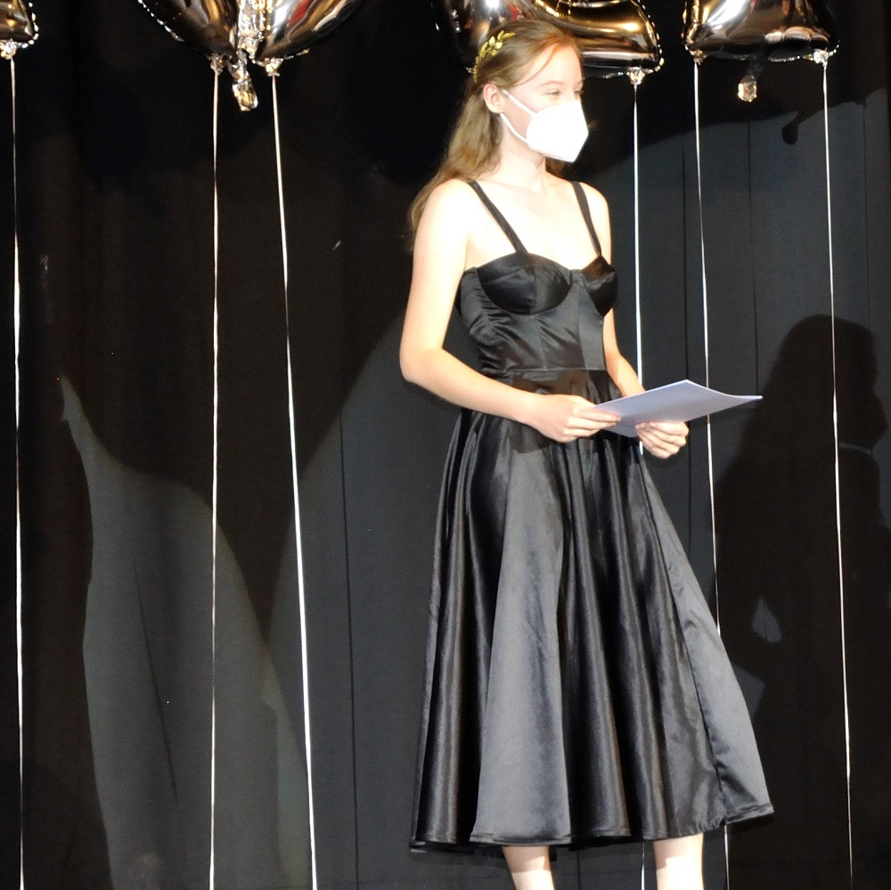

LENA KAHLE
HOME
ABOUT
CV
My Prom Dress
This is the dress I made for my graduation. Technically, there would have been a prom but it got cancelled due to the pandemic.
For the skirt, I used a 3/4 circle skirt. The bodice is the "Rose Café Bustier" by Daria Patternmaking and can be found here.
The fabric I used is "Baumwollsatin Valerie" by Stoffe Hemmers. It is a heavier cotton satin.
